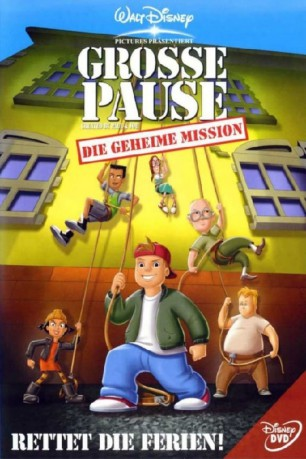

#8610 Disneys grosse Pause - Die geheime Mission
Alternativ: Recess: School's Out
 
 IMDB-Wertung: 6.6 / 10
IMDB-Wertung: 6.6 / 10  Metascore: 0
Metascore: 0 
T.J. entdeckt in den Sommerferien grüne Strahlen, die aus der Schule kommen. Niemand will ihm glauben, außer Direktor Prickley, der vaporisiert wird. Nun beginnt ein großes Abenteuer für T.J., Vince, Gretchen, Spinelli, Gus und Mickey. Sie finden heraus, dass Prickleys Rivale Phillium Benedict, der die Sommerferien abschaffen will, für die Sache verantwortlich ist, und alarmieren die Schüler und Lehrer der Schule. Zusammen ziehen alle den ehemaligen Direktor Phillium Benedict aus dem Verkehr.
Jahr: 2001
Dauer: 80 Minuten
FSK: 0
Land: USA Studio: Buena Vista PicturesTonspuren:
Untertitel:
Auflösung: SD (480x288) Größe: 700 MB
Genre: Sci-Fi, Komödie, Animation/Trick, Familie, Mystery
Regisseur: Chuck Sheetz
Drehbuch: Paul Germain
Soundtrack: Denis M. Hannigan
Darsteller:
Datei: X:\Kinder Disney HD\2000-2018\Disneys grosse Pause - Die geheime Mission (2001, FSK0, 480x288).avi seit 25.03.2018
Festplatte: Kinder-Filme+Trick
 Es gibt insgesamt 45 Filme in der Gruppe 'Kinder Disney HD\2000-2018'
Es gibt insgesamt 45 Filme in der Gruppe 'Kinder Disney HD\2000-2018'